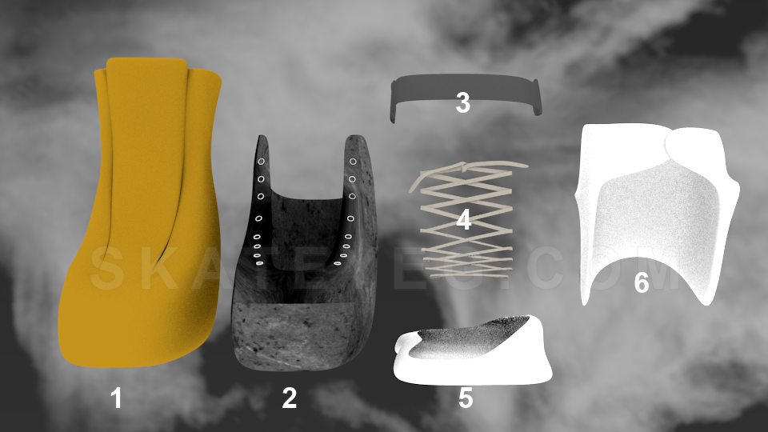
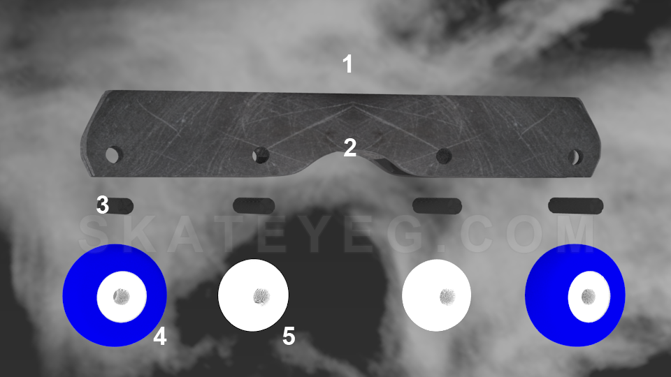
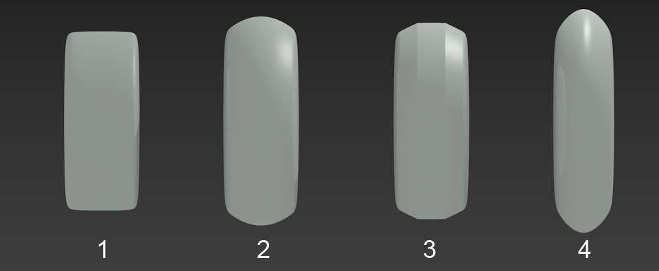

These are just the basics. Different skates may have different or additional parts, on top of which there are wide variations of skates for different purposes. Once you start looking at some of the available skates or parts to modify or maintain your skates you will discover a whole world of possibilities. This is one of those things that makes rollerblading (aggressive or other) a very complex and interesting sport.
Boot and Components

Liner: This goes between your shell and your foot. Similar to what you would see in ski or snowboard boots. The liner is an essential part of how your skate will fit and feel. There are all sorts of different liner designs and they're made from various materials. Some liners have their own lacing system, some do not. Some liners come with insoles (foot beds) and some do not. An addition (or removal) of an insole from the liner can remedy liners that feel too loose (or too tight).
Shell: The core part of the boot that everything else is connected to. These can have different shapes and designs. They can be made from different types of plastic which are either more rigid, or more flexible. Some shells come wrapped in "skins" which are an outer layer of some kind of material (usually a type of leather) that make the skate look stylish.
Buckle/strap: The main buckle or strap will be at the top of the cuff, to keep your leg tight and prevent too much forward flex. There can be more buckles or straps than this main one, it depends on the skate. These will generally have more hardware with them (i.e. small bolts, washers, etc.). Generally buckles consist of a plastic strap and metal latches. If it is just a strap (i.e. no latches) the straps are made from some type of strong cloth material and use a Velcro (hook and loop) type system.
Laces: Much like ice skate laces, they are there so you can pull the shell as tight as you need/are comfortable with and keep your foot from moving around. Any type of lace will do really, but a good replacement lace (especially if you want to keep your shell tighter) is a Waxed Hockey lace.
Soul Plate(s): An aggressive skate essential part. The soul plate is there so you can have a surface to grind on. This goes between your shell and your frame. They can be one piece, two piece, or more pieces, it depends on the skate. These generally come with extra mounting hardware depending on the design. The type of plastic used in a soul plate will determine how well the skate slides on Soul Grinds. Each type of skate will have differently fitting soul plates that will come with different designs. The design of the soul plate determines how your soul/negative soul grinds lock, but also how your groove grinds lock when you lean enough on your grind to lock both the groove and the soul plate on an object. Soul plates are exchangeable on most skates, however they will not be a perfect fit if you try to mix and match between different style shells.
Cuff: An essential part of the shell, this is what gives you forward and backward flex motion while still keeping your foot and ankle secured. Cuffs will generally be mounted to the shell with two cuff bolts. Depending on the height and design of the cuff the skates can feel more rigid, or more flexible. Different skates have taller or shorter cuffs, which changes the dynamic of the skate and also partially determines what type of liner will work with the skate, and which will not (i.e. you don't want the top of the liner to be lower than the top of the cuff, otherwise the cuff will bite into your skin when bending your ankles to grind).
Often you can buy "boot only" skates. This should be everything from the Soul Plate up, i.e. excluding the frame/wheels and any other frame related hardware.
Frame and Components

The Frame: The frame holds your wheels and and anti-rockers to the shell. In some cases it will also hold up your soul plate (depending on design). You have choices to run Flat, Anti-Rocker, as well as Freestyle (but not seen too often) frames. There is a wide variety of frames that are made from different materials, or have specific designs. The differences in frames have a major impact on how you grind, what you grind, and also what wheels you can use. Most skates (not all however) use a UFS system. As much as we try to let you do your own research you absolutely must watch this video on YouTube by Back To Blading that digs deep into the UFS system and the history of frame evolution.
Groove (H-Block): The groove, or H-Block is a design in your frame. There are frames that have a groove in them as part of the design. Some other frames may have a removable H-Block that provides the shape of the groove. The size and shape of the groove will impact how the groove grinds lock, and how they feel. As you may have guessed you would use this area to lock Groove Grinds, but not just Groove Grinds. Take a Mizou for example, your back leg will be locked hard on this area as well.
Axle Bolts: Axle Bolts hold your wheels into the frame and provide a place for the wheels to spin on. These will go through one side of the frame, through the bearings, and then to the other side of the frame. Generally the size (on new market skates) will be the same to fit the bearings (some older skates/or fitness skates may have smaller diameter bolts and these require special spacers to go into the wheel/bearing). Some frames have very specific bolt tips that fit only into the same brand (like Ground Control frames). Axle bolts will generally also hold your anti-rockers or your H-Block in place, depending on the frame design. Typically with an axle bolt you will have a male and female part that fit together. For instance the axle part will be threaded on the inside of the axle, and a head bolt that will screw into the axle. Some (metal) frames have threading on the frame itself, in which case you only need a one piece axle bolt.
Wheels/bearings: Rollerblade wheels come in all sorts of sizes and compounds these days. Widthwise *all* (there are always exceptions) rollerblade wheels should fit into your frame, however the diameter of what wheel you can run will be dictated by what is allowed by the frame. Bearings come in a standard size, but they vary in their mechanical properties (look up ABEC, SWISS, or rollerblade bearing definitions online). For each wheel you will need two bearings that click into the wheel on either side. In between the two bearings there should be a spacer which provides proper spacing between the two bearings, additionally providing rigidity and stability to the wheel mounting.
Anti-Rockers: Anti-Rockers are something that developed with the frame design for aggressive inline skating. They replace the two wheels in the middle of the frame. They are generally plastic and are there to help you lock in your trick on the groove of the frame and prevent your foot from slipping out of that position etc. They are also there to eliminate wheel bite. However with the variations of possible frames it is much more possible to run flat frames that don't use anti-rockers and still have a moderate risk of wheel bite. Some anti-rockers are just really small wheels (44-45mm) that accept regular size bearings; these provide a quieter frame (plastic ones are clunky) and a more stabilized anti-rocker that rolls properly when engaged.
Brandon Drummond - Aggressive Skate Parts Review
A must watch video that breaks down the Aggressive Skate into more detail including extra information about wheels and bearings.
General Frame Types
Anti-Rocker
An Anti-Rocker frame setup uses 2 full size wheels (per frame) on the outside (so wheel 1 and 4) and 2 small plastic Anti-Rockers (which can also be two small size wheels that can receive bearings). The Anti-Rocker frames evolved into existence during the uprising of the street skating era. They were created to allow more space in between the 2nd and 3rd wheel for the ability to perform grinds more comfortably, without having two full size wheels in the middle; these would get in the way and create wheel-bite. At one point an Anti-Rocker frame was the "go-to" frame for Aggressive Inline street skaters. The frames were made for smaller wheels (around 58mm) for lower center of gravity and the wheels also changed to a "flat" profile. The advantages are that you have a more stable skate and easier landing, the disadvantages are that it's harder to turn and this set-up is generally slower than a Flat frame setup.
Flat
A Flat frame setup uses 4 (or more) full size wheels (per frame) and no Anti-Rockers. There is a variety of Flat frames on the market now that use different methods of wheel mounting positions. Quite a few Pro-Skaters are now skating Flat frames, and the designs of the frames accommodate for the issues that Anti-Rocker frames were made to resolve. Arguably, you can now skate Flat and do everything you could do with Anti-Rocker frames, but with the benefits of better turning ability, more speed, and stability. The disadvantages of Flat frames are that technically you can get more wheel-bite on your tricks, and get a smaller Groove for your Groove Grinds - this depending on the frame design. This type of setup will generally be more expensive than the other frame types because you will need 2 extra wheels, and 4 extra bearings per frame.
Freestyle
Currently (or through history) you would not really see too many people skating Freestyle frames, and there are not too many on the market. A Freestyle frame would only use 2 wheels, with nothing in the middle. In this instance the frame uses a triangle like shape that meets the tip in the middle of the frame. This allows for a very large Groove area that can be used for grinding all sorts of objects, arguably better than any other frame. This would also make for a cheaper setup where you need less hardware (2 axles), and only two wheels and 4 bearings per frame in comparison to the other frame setups. The disadvantages are rolling over elements where with Anti-Rocker, or Flat, you have wheels making contact with whatever you're rolling over - with Freestyle you only have plastic. The frames also pose a risk of breaking in the middle due to their weaker design with less material in the area that would be used for grinding.
General Wheel Profiles
Rollerblade wheels come in all sorts of shapes, we call them profiles. More specifically, Aggressive Inline wheels have a few general types of wheel profiles that you can purchase. The profile of the wheel has a significant impact on the type of control you have over your skate. These general profiles have advantages and disadvantages associated with them.

1. Flat/Square Profile
These come in medium to small sizes (usually around 58mm).
Advantages: more stability when jumping into and landing from tricks, better balance when rolling.
Disadvantages: slower skating, difficulty when turning or carving bowls and other elements.
2. Rounded Profile
These come in medium to larger sizes (usually around 60mm-62mm).
Disadvantages: less stability when jumping into and landing tricks.
3. Semi-Flat Profile
These come in medium to larger sizes (usually around 60mm-62mm).
Advantages: the in-between of Flat and Rounded Profile - arguably ideal setup.
4. Bullet Profile
These come in larger sizes (usually around 70mm-80mm or bigger).
Advantages: very fast, great for turning and sliding.
Disadvantages: most unstable and hard to keep balanced, can slip out easier in bowls and other elements.
You will of course find that ultimately it comes to preference of the rider to which wheel they prefer. The hardness of the wheels and the compound they are built of also affects the performance of the wheels so it is not only the profile of the wheel that will dictate how the wheel skates. If you're just getting into skating and wondering what to start with we suggest you start with #2. Rounded Profile. In the end, depending on how you skate and/or rotate your wheels, they pretty much end up somewhere in between flat and rounded profile anyway so these wheel specifications will only last a certain amount of time until you wear your wheels.
Wheel Hardness
Aggressive Inline wheels have different hardness ratings, similar to fitness skate wheels. Aggressive wheels generally have a hardness range from around 88a to 95a but the most common rating appears to be 90a.
The harness of the wheel will determine how grippy the wheel is and how quickly it will wear (this also highly depends on the wheel compound - the materials used to make the wheel, so not all 90a wheels will be the same).
The lower the number (i.e. 88a) the softer the wheel will be (more grip/traction), and vice versa the higher the number the stiffer the wheel (less grip/traction). This also follows the pattern of the lower the number the quicker the wheel will wear out, vs the higher the number the longer the wheel will last. Generally wheels under 90a are "better" for indoor use and/or wood ramps/elements and 90a and up are better for outdoor/street use. All in all it's about your preference and how grippy you like your wheels to be. We suggest you try a few different types and brands during your skating experience to find what works best for you!
Types of Grinds
Soul Grinds
Soul Grinds happen when you use the Soul Plate of your skate to lock the grind. At least one of the skates (on either the negative or positive side) must make contact with the object to classify as a Soul Grind. Variations such as Bin or Tokyo (Rough or Tough) are allowed, where still a portion of your skate is using the Soul Plate for the grind.
Groove Grinds
Groove Grinds happen when you use the Groove (H-Block) in your skate to lock the grind. At least one of the skates needs to be locked on the Groove, but neither of the skates should be locked on the Soul Plate.
Special Name Grinds
Special Name Grinds are just regular grinds that were given a name for some reason or another. These can vary regionally (i.e. different countries, or even different cities) in their meaning at times.
Variations Grinds
Variations are additional things that you can do with any of your grinds. They can be added to regular grinds, or combined in sequences of movements.
Types of Air
Air
A basic Air is when you jump up, off or over something, and have some amount of time you spend in the air. Airs can be minimal, or magnificent, it's up to you and your skill level. Any Air can be combined with the following additions. You can perform Airs into grinds, or out of grinds as well.
Drop
A Drop is when you jump off of something and land below the level of where you jumped from. These can be considered Air tricks (or combined with Air if you want to jump up and get some Air before you fall) as you can do grabs, spins, and other variations, when you're falling to your destination. Technically anything that you jump off-of could be a drop, but for it to really count it should be some significant elevation difference. Drops can be done into ramps, transitions, etc. and generally these are a lot easier on your body because you can use your momentum to roll away from falling. They can also be done to flat (i.e. to flat ground), and these can put quite a bit of impact on your knees, back, and other parts of your body - these are the less safe version of a Drop. Normally if you're skating transitions, or half pipe, quarter pipe, the action of you falling back into an element is not a Drop, but just the natural way to skate what you're skating. A Drop should be intentional in terms of your "fall" to the target surface.
Grabbed Air
A grabbed Air is a trick you perform during a regular Air, but you grab one (or both) of your skates. How and where you grab your Air will determine the type of Grabbed Air trick name.
Gaps/Transfers
While performing an Air (or Grabbed Air) trick you can do it over gaps (i.e. space or void between where you are jumping from to where you are jumping to) or you can transfer from one object to another (i.e. from one quarter pipe over to a different quarter pipe).
Spins/Flips
You can, naturally, add any spin or flip to your Air (or Grabbed Air). Some spins and flips will determine the name of the trick.
Other Tricks
Cess Slides
Cess Slides are a variation to a grind (could technically be any grind) but instead of grinding something you are sliding on it (i.e. the ground) while making contact with the object with either your Frame or Soul Plate (or both). Most common Cess Slides are Royale, Frontside, Full Torque, etc. but really it could be any grind that you can think of. The concept of the slide is that you are quite literally free sliding with your feet in the position of whatever grind it would be, and you are not locked on anything.
Wall Rides
A Wall Ride happens when you roll your wheels for some amount of time on a vertical surface before you drop away from it. It can be done with both skates, or just one skate. Wall rides can be as basic or as creative as you can make them. It really does not matter the height as much as the angle of what you are riding on, if it's a vertical surface and you roll on it you can say you're doing a Wall Ride. In this instance it doesn't need to be an actual "wall", it can be a box, a pillar, etc.
Vocabulary
Drag foot (foot drag)
When you do a trick and land it but you drag one of your feet behind or to the side (i.e. you don't roll out with both skates properly). Some will say the trick doesn't count when you do that, but depending on the difficulty level of the trick this may still be accepted as "OK".
Getting On-Top of Your Grind
The necessity of getting on-top of your grind is to be able to hold onto the grind for a longer distance. This means you found the perfect body position to lock your trick and are in ideal balance where you do not need to put too much effort into extending the length of your grind.
Full Commit (Fully Committed)
A Full Commit is when you 100% commit to the trick you're doing. For instance, if you're doing a grind you jump into it with confidence both feet up in the air before you lock whatever you're about to grind, and if you're doing your grind grabbed you're grabbing your skate(s) before you lock the trick. Or it could mean a really pumped jump and a solid grab in the air. Basically you are doing the trick without any hesitation and full confidence that it will work the way it is intended.
Laced, or Locked
Lacing, or locking, a trick means that you did the trick right, the way it is intended to be done, or accomplished something that you were attempting to do.
Soul Foot/Leg
Generally this will be your leading leg that you are most comfortable doing grinds with. Your soul foot will be then the one you lock your soul tricks with (i.e. if your soul foot is your left foot, when you do a Makio you will be locking your soul plate of your left skate).
With this preference then, you are likely to be doing groove grinds with the same leg dominating (i.e. if your soul foot is your left foot, when you do a Royale your back skate will be your left skate).
There are people who have no preference and can skate on either foot, or they do some grinds with their left foot and some other ones with their right foot dominating.
If you do have a preferred foot then that is your soul foot, or in other words the "way you skate". If you skate left, that means your soul foot is your left foot.
Snake, or Snaked
A common term (mainly in the skatepark community) used to describe a person that cuts someone's line right before they're about to go, or while they are on their way. To get Snaked means to get cut off by a Snake. These happen very naturally sometimes, where one rider will not notice the other. However sometimes people will do it on purpose, which as you may guess creates some anger issues between riders. Don't be a snake! At least not on purpose. It's dangerous and people get hurt, or start unnecessary arguments and fights.
Switch
Arguably, skating switch is if you have a dominant foot but you do your ticks with your other foot.
The argument here is that some people don't have a dominant foot, which in this case we would say they are doing something switch if it is more difficult for them to do it that way.
In essence: doing a grind switch means you're doing it not your natural way but a way that is more difficult for you than the "normal" way you would do it.
Doing something/skating switch applies not only to grinds. Most of us have a preference of direction of spin, turning/stopping, doing grabs, skating backwards with a "preferred shoulder", etc. All of those can be done switch, meaning you would do them the other or opposite way of what you normally do.
Wheel Bite
Wheel bite is something that happens when your wheels bring your foot to a stop (or slow it down significantly) while grinding, i.e. they bite into whatever surface you are on. It means that your skate is getting stuck on the wheels, and it's not fun.